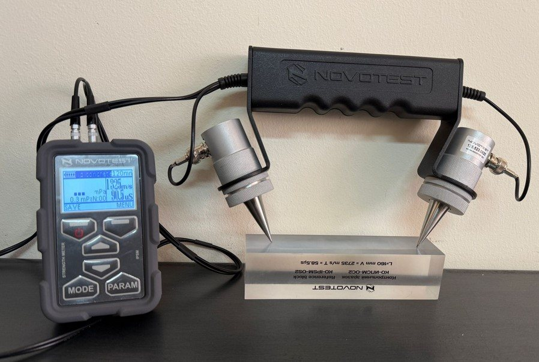
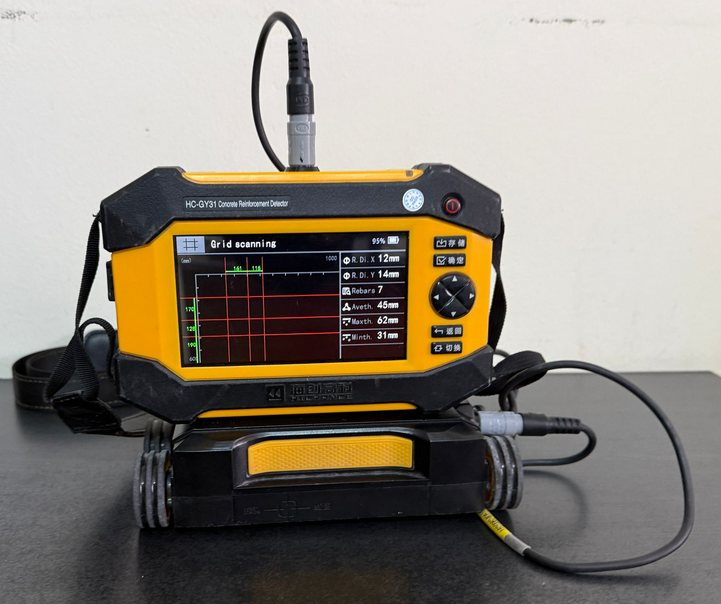
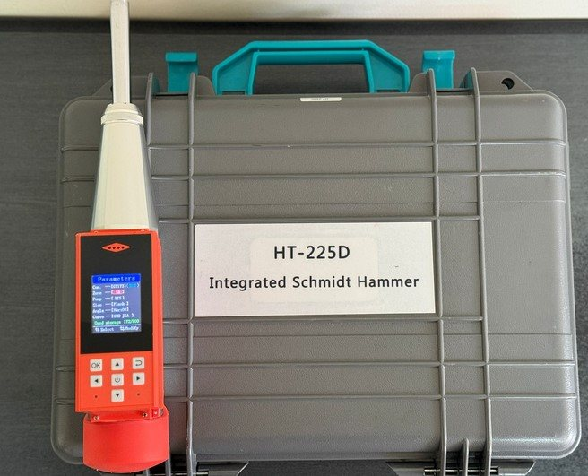

PAHOMETRU HC-GY61
Pahometrie
Localizează armăturile din beton și le determină diametrul și grosimea stratului de acoperire. Scanarea pe grilă arată dispunerea armăturilor pe o suprafață întreagă.
Evaluăm construcții existente și verificăm proiecte la cerințele A1 și Af. Încercările nedistructive se fac direct pe structură, fără să o afecteze.

Pentru structurile de rezistență ale construcțiilor: beton armat, zidărie, metal, lemn.
Pentru terenul de fundare al construcțiilor și pentru masivele de pământ: taluzuri, versanți, umpluturi.
Verificatorul atestat confirmă că proiectul respectă normativele în vigoare. Fără verificare, proiectul nu poate fi folosit pentru autorizarea lucrărilor.
Expertul atestat evaluează o construcție existentă: dacă este sigură, ce poate suporta și ce intervenții sunt necesare.
Pentru clădiri construite fără autorizație: stabilim dacă structura corespunde ca rezistență și stabilitate.
Arătăm dacă demolarea parțială sau totală se poate face fără să afecteze corpul păstrat sau clădirile vecine.
Verificăm că extinderea în plan sau pe verticală nu compromite rezistența structurii.
Indicăm în ce condiții se pot modifica pereții fără a atinge elementele de rezistență.
Legislația cere expertiză tehnică înainte de anvelopare.
Afli starea tehnică a structurii și dacă e sigură pentru destinația dorită.
Pentru o casă nouă alipită de una existentă, certificatul de urbanism cere expertiza tehnică a clădirii existente.
Analizăm actele și planurile existente și inspectăm construcția.
Măsurăm elementele structurale și determinăm calitatea betonului, a armăturilor și a zidăriei.
Evaluăm structura conform Codului de proiectare seismică P100-3, pe un model de calcul.
Concluzii, încadrarea în clasa de risc seismic și soluțiile de intervenție recomandate.

Determinăm calitatea materialelor fără să extragem probe din structură.
Localizează armăturile din beton și le determină diametrul și grosimea stratului de acoperire. Scanarea pe grilă arată dispunerea armăturilor pe o suprafață întreagă.

Măsoară indicele de recul pe suprafața betonului, din care se estimează rezistența la compresiune. Datele sunt memorate digital pentru fiecare punct.
Măsoară viteza de propagare a undelor prin element, care arată omogenitatea betonului și eventualele fisuri. Combinată cu sclerometria, dă o estimare mai sigură a clasei betonului.
Spune-ne ce construcție e și ce vrei să faci cu ea. Îți spunem ce tip de expertiză îți trebuie.